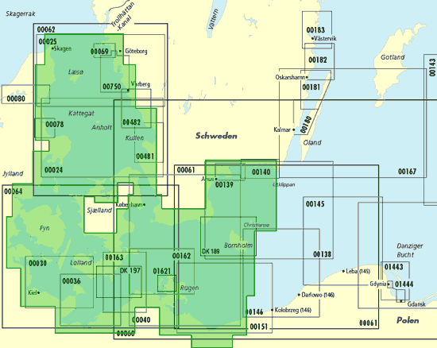
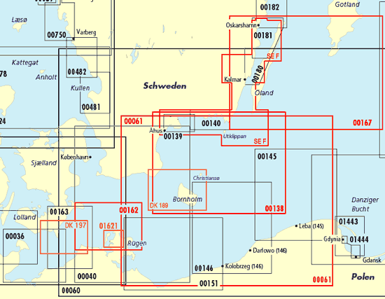
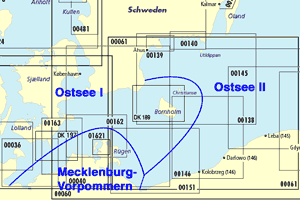

Hallo, ihr beiden! 
Ich habe mal ein paar Pläne hergestellt, um die Übersicht zu erleichtern. Im Folgenden werden zunächst die vorliegenden Materialien und die Entscheidungsgründe behandelt, bevor die Entscheidung zusammengefasst und gemeinsam mit den Kosten präsentiert wird.
An Bord sind die Kartensätze 1 bis 4 des NV-Verlags (Nautische Veröffentlichung, Arnis). Deren Abdeckungsbereich zeigt der folgende Plan zur Referenz und als Ausgangspunkt für die folgenden Überlegungen in grün . Zu beachten ist, dass die schwedische Küste mit diesen Karten nicht komplett befahren werden kann, da Detailkarten für die Schärengebiete fehlen. Es handelt sich dabei um diejenigen Gebiete, die von den deutschen amtlichen Seekarten 139 und 140 an der Südküste sowie ferner 750 und 69 an der Westküste abgedeckt werden.

Ich habe die für den Kauf in Frage kommenden Seekarten im folgenden Plan rot markiert. Außerdem sind drei weitere Detailkarten orange gekennzeichnet; deren Bedarf ist diskutabel, da sie Bereiche abdecken, für die bereits NV-Karten an Bord sind.

Es gibt auch eine größere Version dieses Planes.
Die auf diesem Plan farblich markierten Seekarten lassen sich in die folgenden drei Kategorien einteilen.
Diese Karten sind für die beabsichtigten Ziele (ungefähr Utklippan, Karlskrona, Öland je nach Wetter) unentbehrlich (teilweise werden weiter unten alternative Karten aufgeführt). Es handelt sich um die folgenden Karten:
Auf diese Karten könnte theoretisch auch verzichtet werden. Unter Berücksichtigung der unter 1. genannten und der bereits an Bord befindlichen NV-Karten sind die folgenden Karten für die beabsichtigten Ziele nicht unbedingt notwendig. Dennoch wollen wir sie erwerben, um zusätzliche nautisch wichtige Daten zu erhalten und die Navigation zu erleichtern.
Von der Notwendigkeit einiger der folgenden Karten sind nicht alle Teilnehmer der Seereise restlos überzeugt  . Auch hier geht es darum, zusätzliche nautisch interessante Daten zu erhalten und die Navigation zu erleichtern.
. Auch hier geht es darum, zusätzliche nautisch interessante Daten zu erhalten und die Navigation zu erleichtern.
Wie den Bemerkungen zu entnehmen ist, ähneln sich die Motive für das Beschaffen von 162, 36, DK 189 und 1621. Welche dieser Karten in Abschnitt 2. und welche in Abschnitt 3. eingestuft werden, ist zum Teil Auslegungssache. Die 162 steht bei 2., weil sie von den vier Karten die attraktivste ist: Sie hat den größten Teil der geplanten Route und Infomationen in der Nähe von Rügen. DK 197 und DK 189 sind hauptsächlich als „Gegengewicht“ zur 1621 orange gezeichnet  ; tatsächlich halte ich die Wichtigkeit aller vier Karten für in etwa identisch.
; tatsächlich halte ich die Wichtigkeit aller vier Karten für in etwa identisch.
Falls einzelne Karten nicht verfügbar sind oder aus anderen Gründen nicht akzeptabel sind, kann unter Umständen auf eine der folgenden Alternativen zurückgegriffen werden. Dieser Abschnitt ist nur zur Referenz bei Interesse oder entsprechender Notwendigkeit gedacht.
Bei den schwedischen Seekarten muss sorgfältig auf deren Aktualität geachtet werden, da in der Kartenliste des Sjöfartsverket Ausgabejahre von bis zu 1929 angegeben sind. Aber selbst wenn die Karten berichtigt sind, muss die Sprache beachtet werden, denn schwedische Feuerbezeichnungen etc. können wir nicht gebrauchen!
Die folgenden beiden Karten sind nur der Vollständigkeit halber aufgeführt. Die 3005 wurde oben schon mehrfach genannt, und die SE 3 ist zur Fahrtplanung recht interessant.
Deutsche amtliche Hafenhandbücher existieren nicht (das BSH sieht dafür die Hafenpläne in seinen Seekarten vor). Der DSV-Verlag gibt „semi-offizielle“ Hafenhandbücher für den Großteil von Nord- und Ostsee heraus. Der folgende Plan zeigt die Grenzen der drei Ostsee-Hafenhandbücher des DSV-Verlags.

Wir haben die Hafenlotsen 1 bis 4 des NV-Verlags an Bord. Diese decken neben ganz Bornholm und Christiansø die Südküste von Schweden bis einschließlich Simrishamn ab (also genau den Bereich der DSV-Handbücher „Ostsee I“ und „Mecklenburg-Vorpommern“). Folglich brauchen wir noch zusätzliche Hafenpläne von der schwedischen Küste ab Simrishamn.
Das Hafenhandbuch „Ostsee II“ vom DSV-Verlag (ISBN 3-88412-326-2) enthält alle Ostseehäfen an der Ostküste von Schweden von Simrishamn an nach Norden bis weit hinter Stockholm sowie von den Küsten Finnlands, Russlands, Estlands, Lettlands, Litauens und Polens bis Świnoujście (Swinemünde). Es fängt also genau da an, wo unsere an Bord befindlichen Unterlagen enden und ist damit für unsere Zwecke gut geeignet.
Weiterführende Literatur zu Häfen, Ankermöglichkeiten und „meer“:
Von den offiziellen BSH-Vertriebsstellen sind HanseNautic und der Nautische Dienst zusätzlich auch Vertriebsstellen des schwedischen Sjöfartsverket  . Ich schlage vor, dass wir uns zunächst an HanseNautic wenden.
. Ich schlage vor, dass wir uns zunächst an HanseNautic wenden.
| 1. Unbedingt notwendige Karten | Kosten | HanseNautic-Artikelnummer |
|---|---|---|
| SE F | 43,00 € | 620006 |
| 61 | 22,80 € | 00061 |
| 167 | 22,80 € | 00167 |
| DSV-Hafenhandbuch Ostsee II | 37,80 € | 03887 |
Summe: 126,40 €
| 2. Ebenfalls zu kaufende Karten | Kosten | HanseNautic-Artikelnummer |
|---|---|---|
| 138 | 22,80 € | 00138 |
| 162 | 22,80 € | 00162 |
Summe: 45,60 € – insgesamt 172,00 €
| 3. Zusätzliche Karten | Kosten | HanseNautic-Artikelnummer |
|---|---|---|
| DK 197 | 16,30 € (133,00 kr) | 65197 |
| DK 189 | 16,30 € (133,00 kr) | 65189 |
| 1621 | 22,80 € | 01621 |
Summe: 55,40 € – insgesamt 227,40 €
Ich habe bei HanseNautic mal einen Warenkorb mit den hier angegebenen Druckwerken gefüllt. Theoretisch kannst Du ihn Dir ansehen und gleich von da aus bestellen, aber ich kann nicht garantieren, ob das ohne weiteres funktioniert. Du musst die im Warenkorb angegebenen Daten auf jeden Fall noch einmal überprüfen!
Ob und – falls ja – wie wir die Kosten für die „unbedingt notwendigen Karten“ auf die Bordkasse umlegen, können wir uns später überlegen. Ich favorisiere hier nach wie vor ein Verfahren, das nur die Karten berücksichtigt, die wie hinterher tatsächlich brauchen. Die beiden Karten unter 2. teilen M. und ich mir, würde ich sagen. Wie wir es mit 3. halten, besprechen wir am besten telefonisch. Ich habe jedenfalls kein Problem damit, nötigenfalls jeweils die Hälfte von DK 197 und DK 189 sowie ggf. außerdem die ganze 1621 zu tragen.
Ich freue mich! 
Arne
Ich habe mir auch noch eine zusätzliche Übersicht einiger Fahrtrouten (PNG 150 kb) angefertigt.
{kind=link}
{kind=link}